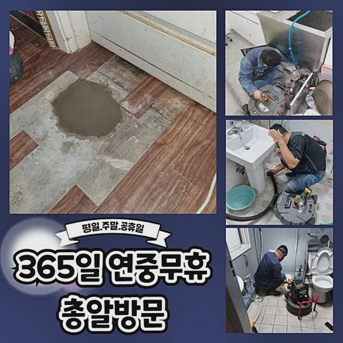
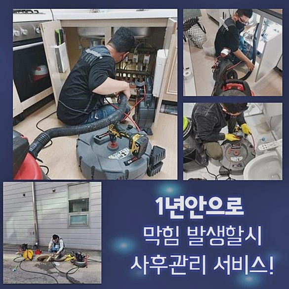
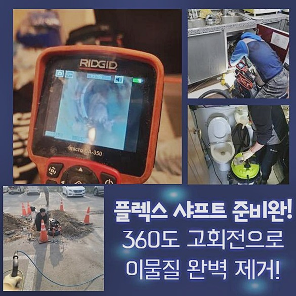
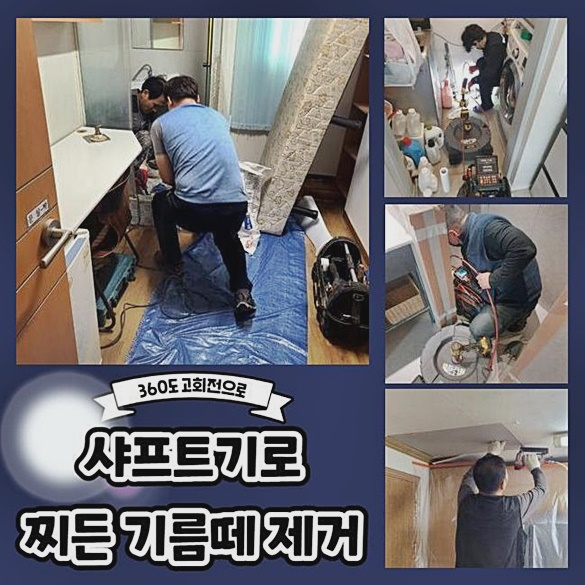
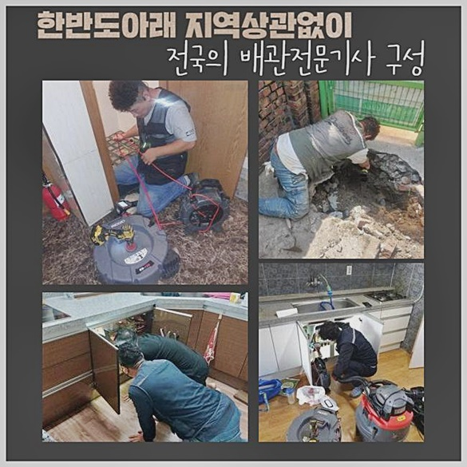
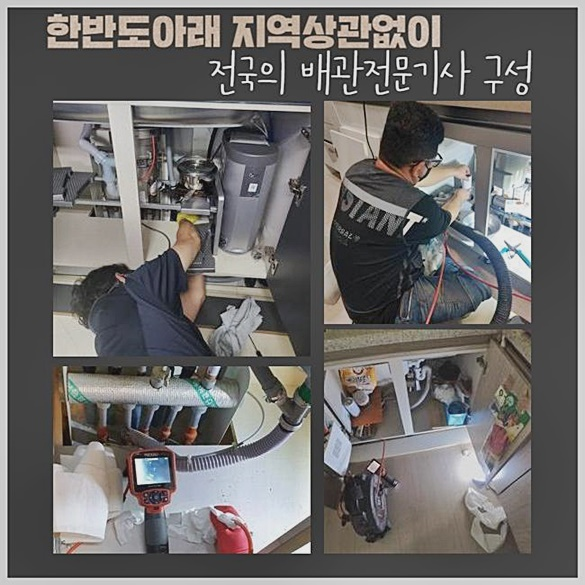

🏠 오금동화장실하수구역류 수리동 하수구뚫어주는곳 배관뚫는업체
용인시 처인구 배관막힘 전문 시공 후기

📋 작업 개요
- 위치: 용인시 처인구, 수원시 영통구, 화성시 동탄
- 서비스 유형: 배관막힘, 고압세척, 내시경점검
- 작업 일시:
- 업체명: 하수구수사대 (010-5615-2118)
🔍 문제 상황
오금동화장실하수구역류 수리동 하수구뚫어주는곳 배관뚫는업체
얼마 전 내방드린 현장은 외식업에 종사하시는 의뢰인분이셨는데 급하다는 소식에 정밀한 점검을 들어가게 되었습니다
손님을 맞이해야 하는 식당을 유지하는 곳이면 하수관의 마비가 치명적인 데미지를 입히게 되겠죠
상업적인 활동을 아예 실행할 수 없기에 어려움이 계속 확대될테니 빠르게 손을 봐주는 활동이 필요한 겁니다
여러 단골손님을 확보한 식당 사장님이신 의뢰인분께서 어느 순간부터 물이 내려가지 못하고 고이는 문제로 엄청난 어려움을 고스란히 겪고 계셨네요!
휴업공고를 하지않아 곧 손님들이 방문할 예정이라 하셔서 장비를 신속히 갖춰서 요청받은 현장으로 이동했어요!
초긴장 상태이신 고객님의 안내에 따라서 두루 살펴 보았더니 손대야 할 많은 것들이 속속들이 보였네요
현황을 분명하게 알아보려고 주방 씽크의 수돗물을 더 틀어봤는데 정상적인 물의 배출이 전혀 나타날 기미가 없는 갑갑한 상황이었네요
보름 전 쯤에 처음으로 고장 징후를 눈치채셨지만 설마 아예 막히려나 하는 마음에 별도로 요청을 하지않으셨다 해요
사소한 막힘 증상이라도 눈에 들어온다면 바로 전문 인력에게 문의하시는 스피드가 소중합니다
하루에 끝나지 않는 공사건으로 이어질까 봐 긴장하시는 고객님을 평온하게 만들어 드리며 문제를 진득하게 살펴봤어요
어떠한 최적화된 공정으로 장애를 해결해 줄 예정인지 계획을 체계적으로 말씀드렸습니다
식당 내의 물 배출이 실현되지 않는 상황이니 꽉 막힌 하수구의 윗 부분부터 석션 업무를 해나갔습니다

🔎 원인 분석
💡 전문가 진단: 정밀 진단 장비를 사용하여 슬러지의 고착 여부를 판명하고 타격/세척 작업을 실시했습니다.
주요한 진입구를 석션 작업으로 처리해 주고 카메라를 켜서 배관에 쑥 밀어넣어 투입을 해보았는데요
아무래도 확실하게 개선된 내역을 달성하려면 배관의 속을 신중히 들여다보면서 문제를 인식하여 손봐야 합니다
단 한번의 시공 만으로도 완벽하게 길을 내려면 오류를 형성한 포인트를 전적으로 알아내야 합니다
오류를 찾는 스킬이 탁월한 전문가라 해도 사람의 눈으로 문제점을 알아차리는 것은 불가능에 가까운 일입니다
기술력이 좋은 장비를 동원해서 세세하게 발굴해 내는 단계가 기초라고 칭할 수 있겠습니다
이번 식당도 하수관 내에 카메라를 넣어보고서 어떤 소재의 내부 오물로 인해 생겨난 것인지 검토했어요
배관의 심부에 달하는 영역까지 카메라로 영상을 찍어보았는데 침전물들이 상상 이상으로 꽉 차 있는 꽉 막힌 모습이었네요
조금의 물이라도 흘러갈 여지조차 없도록 철저히 가득 차버렸더라고요
무슨 구성물인지를 규명하고 정보를 탐색하고서 어떤 일이 일어나고 있는지 의아하실 고객님에게도 구체적으로 브리핑을 해드렸습니다
시원한 흐름을 보여줘야 할 배관이 묘하게 느려진 듯 하다면 전문적인 관찰 장비를 통해서 들여다보는 게 밑바탕이 되어야 해요
현황에 가장 맞아 떨어지는 수단을 실시해서 오류를 불러왔던 측면을 명쾌하게 타파할 수 있는 것이죠!
아랫부분도 보려고 점점 깊은 곳까지 발동시켜 보며 깊숙한 지점의 이슈까지도 모두 색출해 냈습니다
음식물을 다루는 식당은 기름 성분을 다량 써야하는 환경상 기름슬러지가 문제가 되는 모습을 많이 보곤 하는데요

🔧 작업 과정
막연한 어림짐작만 가지고 시공에 임하지 않으며 모든 장치를 동원해서 예측의 유효성을 진단하는 단계를 발판으로 삼아야 합니다
내부에 고여있는 노폐물들을 이해하고 나서는 빠르게 돌아가는 샤프트로 물길을 내어주기로 했씁니다
혹시 단순한 스프링 기기를 가볍게 쓰면 해결이 어렵냐고 질문을 저희에게 하셨습니다
그리 중중하지 않은 문제라고 판별을 마친다면 간단한 작동방식의 기기만으로 오류를 극복시키려고 시도를 하고 있어요
언급을 하신 해당 장치는 잘 휘어지는 스프링 모양의 장치로써 이물질을 고정시켜 빼내는 데에 효력을 발휘하게 됩니다
만약에 오랫동안 쌓여온 찌꺼기들이 강도높은 고체로 응집된 상황을 띠고 있다면 아예 쓸모가 없다고 봐야합니다
이런 측면을 상세하게 설명하며 납득시켜 드리고 동의해 주셔서 샤프트 단계에 돌입했습니다
내시경 전문적인 관찰 장비를 통해서가며 깊숙한 깊이에 이르기까지 유연한 형상의 기계를 서서히 내려보았습니다
의문점이 많은 고장난 하수관의 컨디션을 철저하게 밝히고 식별하게 해주어 모태가 되는 문제점들을 육안으로 판별할 수 있게 하는 핵심 툴입니다
이물질을 잡아 올리는 공정만을 통해선 상황을 타개하긴 힘들겠다고 판단이 내려졌기에 오염물질을 잘게 쪼개서 잔여분 없이 쾌적한 하수구를 구축해야 했지요
약간의 이물질이라도 내부에서 자취를 감추지 않으면 이러한 고질적인 막힘이 되풀이될지 모를 일이니 한번 할 때 야무진 정리정돈을 해줘야 했습니다
입구 쪽을 다루는 시기에서는 고장은 여전한 상태였고 뾰족한 효과가 없는 듯이 느껴졌는데요
사실 배관 속은 각양각색의 부패한 물질들이 뭉쳐져서 말라붙어 있었으며 공백이 있어야 할 통로가 한 치 앞도 볼 수 없을 지경이었죠
이정도라면 완성까지 더 많이 소모되며 품도 더 들어갑니다
하자 없는 완벽시공을 목표로 내부세척이 완성되기까지 샤프트로 오염원을 파괴하는 작업을 멈추지 않았습니다
샤프트는 헤드 부근의 쇠사슬로 오염물질을 잘게 부수고 고리로 걸어 올려주면서 환경을 개선하고 하수의 원만한 흐름성을 되살리는 데에 큰 공헌을 해줍니다
지치지 않는 체력과 우수한 도구의 서포트로 막혔던 하수관이 서서히 뚫린다는 점을 느낄 수 있었네요
물이 통과하는 모습들이 차츰 명확해 지다가 새것 같은 배수의 기능을 다시금 얻게 되어 전반적 기능이 문제 없이 최적화될 수 있었어요
배관의 깊은 곳까지 오염물질이 자취를 감춘 점을 점검한 뒤 배수 성능 시험을 이어가 보았어요
개수대 위의 수도밸브로 물을 폐수시키고는 나아지는지 알아보니 시공 전과는 180도 다르게 순조롭게 내려가는 모습이 선하게 보였네요


✅ 작업 완료
일단 고인 물은 사라졌다고 철수하는 게 아니고 시공의 질이 우수한지 여러 차례 점검하면서 결함이 남지 않게 합니다
머지 않아 청소를 또 받아야한다면 고객님의 시간과 물적 재화를 뺏는 격이기 때문에 의뢰인분의 편의를 도모하고 권리를 지켜드리기 위해서 적극적으로 임하고 있습니다
이와 같은 하수도 설비시설에 잡음이 빚어지는 경우에는 거주지 상업지 가리지 않고 어려움을 감당하셔야 합니다
물의 흐름이 끊기기 전에 케어를 해주는 방향이 뭐니뭐니해도 가장 가치있는 투자입니다
갑작스러운 막힘 역류증세로 하수구 전문가의 도움이 시급하게 이뤄져야 나아질 것 같다면 저절로 나아지길 바라지 마시고 저희 쪽에 컨택해 주세요
전문가로서의 소임을 갖고 휴일이라고 하더라도 내방을 드리도록 할게요



⚠️ 하수구 배관 막힘 예방 및 관리 가이드
- ✅ 머리카락, 비닐, 물티슈 등 물에 분해되지 않는 이물질은 절대 흘려보내지 마세요.
- ✅ 기름기 많은 식기는 설거지 전 키친타올로 먼저 기름때를 닦아내세요.
- ✅ 주기적으로 배수구에 뜨거운 물을 가득 부어주어 유지방 고착을 방지하세요.
- ✅ 작업 후 1년 이내 재발 시 무상 A/S 보증 서비스를 제공합니다.
💡 핵심 정리
- 확실한 장비 작업(내시경 점검 및 샤프트 스케일링)으로 원인을 뿌리 뽑습니다.
- 작업 후 1년 이내에 동일한 부위 재발 시 100% 무상 A/S 서비스를 보장합니다.
- 서울 · 경기 · 인천 전 지역에 24시간 언제든 긴급 출동할 수 있도록 항시 대기 중입니다.
❓ 자주 묻는 질문 (FAQ)
🚨 용인시 처인구 배관막힘 문제로 고민이신가요?
정확한 원인 진단과 확실한 시공으로 재발 없는 해결을 약속드립니다.
24시간 긴급 출동 | 서울 · 경기 · 인천 전지역 | 1년 내 재발 시 무상 A/S